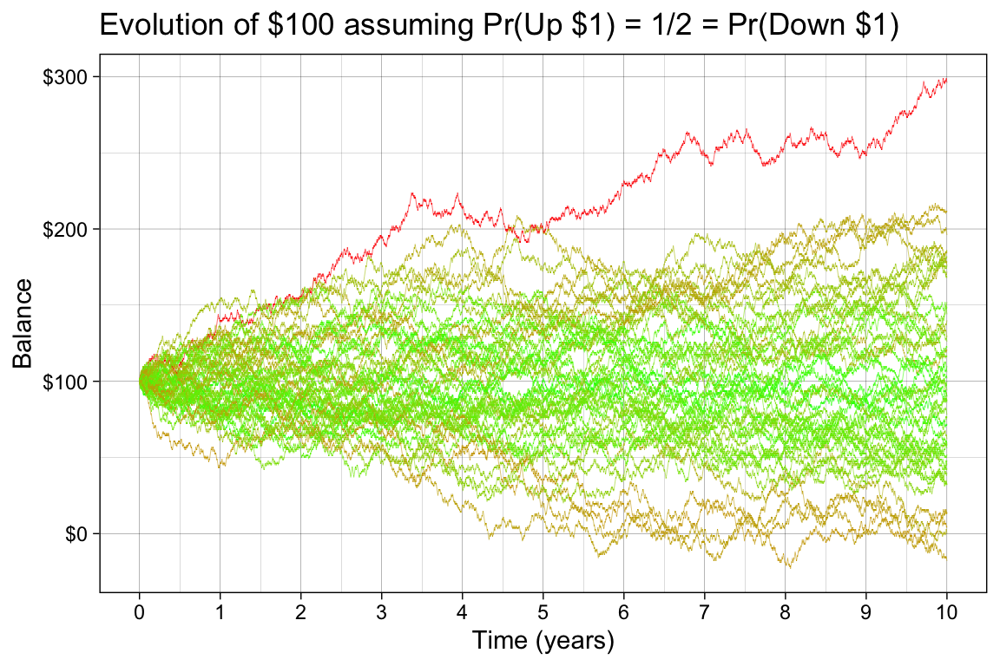
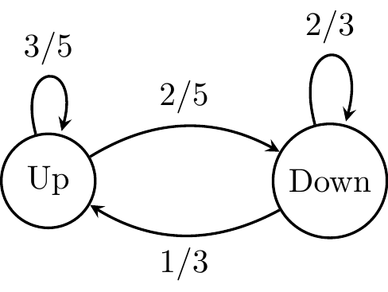
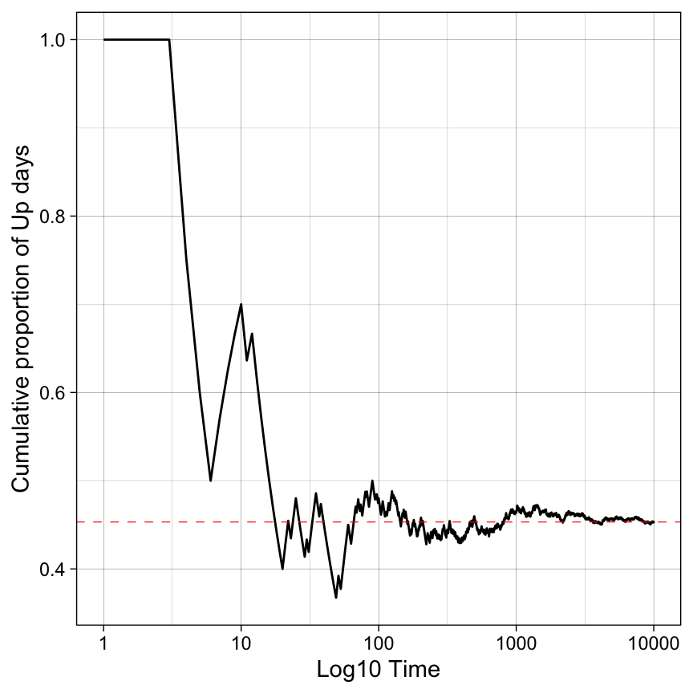

Consider a sequence of random variables \(Y_1, Y_2, Y_3, Y_4,...\), where for our purposes the subscripts index time. You can factor the joint distribution as \(f(y_1) f(y_2 \mid y_1) f(y_3 \mid y_2,y_1) f(y_4 \mid y_3, y_2, y_1)...\) (using a density or mass function \(f\) according to whether the \(Y_i\) are continuous or discrete). Larry Wasserman uses a notational trick to write this as \(\prod_{i=1}^{N} f(y_i \mid \text{past}_i)\), where \(\text{past}_i = y_{i-1}, y_{i-2}, ..., y_0\)
A Markov chain is a stochastic process represented by a sequence of random variables \(Y = Y_0, Y_1, \dots\) that obeys a Markov property. In words, the Markov property says that the future is independent of the past, conditioned on the present.
The last equality is there to simplify the notation that will become handy later on, where we take the current state \(i = y_t\) and the next state \(j = y_{t+1}\).
You can think of a Markov chain as a process that evolves in time according to some rule governed by probabilities of moving around its state space.
A discrete state space of a Markov chain is a collection of all possible states that this chain can visit, which can be finite or infinite.
Consider a Markov chain with infinite but discrete state space. You start with $100 in your account and every day, you can either make $1 with probability \(1/2\), or lose $1. If you are allowed to overdraft the account, the state space is all integers. The Markov property is satisfied since, on any given day, you only need to know the balance during the previous day, not the whole history of transactions. We can visualize this process with a simulation.
library(ggplot2)library(tidyr)library(dplyr)library(scales)library(purrr)set.seed(1234)W <-100LPr <-0.5# Pr of upN <-365L *10L # 10 yearsn <-50L # compute 50 possible futuresrun_chain <-function(N, p, w) { s <-sample(c(-1, 1), size = N, prob =c(1-p, p), replace =TRUE) balance <- w +cumsum(s)return(balance)}chains_df <-map_dfr(1:n, \(x) {tibble(Chain =as.character(x),Time =1:N,Value =run_chain(N, Pr, W) )})# color more extreme futures more red and less extreme more greenextremeness <- chains_df |>group_by(Chain) |>summarize(extreme =max(abs(Value - W)), .groups ="drop")chains_df <-left_join(chains_df, extremeness, by ="Chain")ggplot(chains_df, aes(x = Time/365, y = Value, group = Chain, color = extreme)) +geom_line(linewidth =0.1) +labs(title ="Evolution of $100 assuming Pr(Up $1) = 1/2 = Pr(Down $1)", x ="Time (years)", y ="Balance") +scale_color_gradient(low ="green", high ="red") +scale_y_continuous(labels =dollar_format()) +scale_x_continuous(breaks =seq(0, 10, by =1)) +theme(legend.position ="none")

A lot more can be said about these types of processes, but before we get there, let’s consider a simpler scenario.
As an example of a finite, discrete state space, consider a market that could go up or down daily. If it is an up day, we assume that tomorrow will be an up day with probability 3/5 and a down day with probability 2/5. If it is a down day, tomorrow will be a down day with probability 2/3 and an up day with probability 1/3. This kind of mild memory encodes the fact that there is a slightly higher probability of going down if we are in the down day than going up if we are in the up day.
This chain has only two states, Up and Down, and it can be visualized using a graph and encoded using a matrix, which we will call a transition matrix Q.

The following transition matrix \(Q = \begin{pmatrix} \frac{3}{5} & \frac{2}{5} \\ \frac{1}{3} & \frac{2}{3} \end{pmatrix}\), corresponds to the above transition graph.
This matrix has the property that all rows sum to one. Each entry is specified by \(q_{i j} = \mathop{\mathrm{\mathbb{P}}}(Y_{t+1}=j \mid Y_t=i)\): the probability of moving from current state \(i\) to next state \(j\) in one step (row \(i\), column \(j\) of \(Q\)). For example, if \(i = \text{Up}\), then \(q_{\text{Up},\text{Up}} = 3/5\) is the probability of another up day tomorrow and \(q_{\text{Up},\text{Down}} = 2/5\) is the probability of a down day tomorrow. With states ordered (Up, Down) as above, these are \(q_{11}\) and \(q_{12}\).
Let’s say we start in \(y_t = \text{Up}\) and run the process for 10,000 days. What proportion of time will we spend in a happy Up state? We will run a simulation first and then check the result analytically.
library(expm)T <-1e4states <-c(1, 0) # 1: up day, 0: down dayy <-numeric(T)Q <-matrix(c(3/5, 2/5, 1/3, 2/3), ncol =2, byrow =TRUE)y[1] <-1# start in the up dayfor (t in2:T) {if (y[t-1] ==1) { y[t] <-sample(states, size =1, prob =c(Q[1, 1], Q[1, 2])) } else { y[t] <-sample(states, size =1, prob =c(Q[2, 1], Q[2, 2])) }}cummean <-cumsum(y) /seq_along(y)p <-ggplot(aes(t, y), data =data.frame(t =1:T, y = cummean))p +geom_line(linewidth =0.5) +scale_x_log10() +geom_hline(yintercept =mean(y), linewidth =0.2, linetype ="dashed", color ='red') +ylab("Cumulative proportion of Up days") +xlab("Log10 Time")

The process starts chaotic, but after about one thousand iterations, it seems to stabilize at around 0.45. We will now investigate this behavior analytically.
Powers of Q
The long-term equilibrium is reached when the proportions of time spent in each state have stabilized. The limiting distribution over states is called the stationary distribution of the chain (here a PMF \(\pi\) on \(\{\text{Up}, \text{Down}\}\)). For the finite, irreducible, aperiodic chains in this note, that distribution exists and is unique.
\(n\)-step transition probabilities
Let \(Q\) be the one-step transition matrix, with entries \(q_{ij} = \mathop{\mathrm{\mathbb{P}}}(Y_{t+1}=j \mid Y_t=i)\) as above (row \(i\), column \(j\)). For any number of steps \(n \geq 1\), the \(n\)-step transition probability from state \(i\) to state \(j\) is
i.e. the \((i,j)\) entry of the matrix power \(Q^n = Q \cdot Q \cdots Q\) (\(n\) factors). This is the Chapman–Kolmogorov idea: to go from \(i\) to \(j\) in \(n\) steps you sum over all intermediate paths of length \(n\), which is exactly what matrix multiplication encodes. For a chain with \(K\) states, \(Q\) is \(K \times K\) and the same formula holds: every entry of \(Q^n\) is an \(n\)-step probability.
If you describe the current distribution over states as a row vector \(\mu^{(t)}\) (so \(\mu^{(t)}_i = \mathop{\mathrm{\mathbb{P}}}(Y_t=i)\)), then one step updates via \(\mu^{(t+1)} = \mu^{(t)} Q\), and after \(n\) steps
\[
\mu^{(t+n)} = \mu^{(t)} Q^n.
\]
So \(Q^n\) tells you both how mass evolves from any fixed starting state (rows of \(Q^n\)) and how an arbitrary initial distribution flows forward.
What happens as \(n\) gets large?
For a well-behaved finite chain (irreducible and aperiodic), the rows of \(Q^n\) converge to the same vector, namely the stationary distribution \(\pi\):
\[
\lim_{n\to\infty} (Q^n)_{ij} = \pi_j \quad \text{for every } i.
\]
So after many steps, the probability of being in state \(j\) is approximately \(\pi_j\), almost regardless of where you started. That matches the simulation: the cumulative fraction of Up days settles down. You can compute \(Q^n\) explicitly (e.g. with a matrix-power routine) and watch the rows flatten toward \(\pi\).
Link to eigenvalues (preview)
When \(Q\) is diagonalizable, \(Q = V \Lambda V^{-1}\) with \(\Lambda = \mathrm{diag}(\lambda_1,\ldots,\lambda_K)\), and
\[
Q^n = V \Lambda^n V^{-1}.
\]
As \(n\) grows, eigenvalues with \(|\lambda_\ell| < 1\) shrink to zero in \(\Lambda^n\); under our conditions, one eigenvalue equals \(1\) and corresponds to the stationary direction. That is why taking powers of \(Q\) and finding a left eigenvector of \(Q\) with eigenvalue \(1\) are two sides of the same coin—the next section uses the eigen route to read off \(\pi\) without raising \(Q\) to a huge power.
library(expm)# Q is defined in the simulation chunk above; (Q^n)[i,j] = P(Y_{t+n}=j | Y_t=i)stopifnot(exists("Q"))ns <-c(1L, 5L, 20L, 100L)Qn_list <-lapply(ns, function(n) Q %^% n)names(Qn_list) <-paste0("n=", ns)for (nm innames(Qn_list)) {cat("\n", nm, " — rows of Q^n (Up, Down):\n", sep ="")print(round(Qn_list[[nm]], 4))}
The stationary row vector \(\pi\) satisfies balance with the one-step kernel: \(\pi = \pi Q\) (equivalently \(\pi^{\mathsf T} = Q^{\mathsf T} \pi^{\mathsf T}\)). So \(\pi^{\mathsf T}\) is a right eigenvector of \(Q^{\mathsf T}\) with eigenvalue \(1\). The code below calls eigen(t(Q)) on \(Q^{\mathsf T}\), extracts the eigenvector for the eigenvalue closest to \(1\), and normalizes it to sum to \(1\). That recovers the same \(\pi\) you would see as the limiting rows of \(Q^n\) in the previous section.
# Compute eigenvalues and eigenvectors of the transpose of Q.eigen_res <-eigen(t(Q))print(eigen_res)
# Left eigenvector of Q with eigenvalue 1: use eigenvector of Q' for lambda closest to 1k <-which.min(abs(Re(eigen_res$values) -1))stationary_vec <-Re(eigen_res$vectors[, k])# Normalize to ensure the elements sum to 1stationary_distribution <- stationary_vec /sum(stationary_vec)names(stationary_distribution) <-c("Up", "Down")print(stationary_distribution |>round(2))